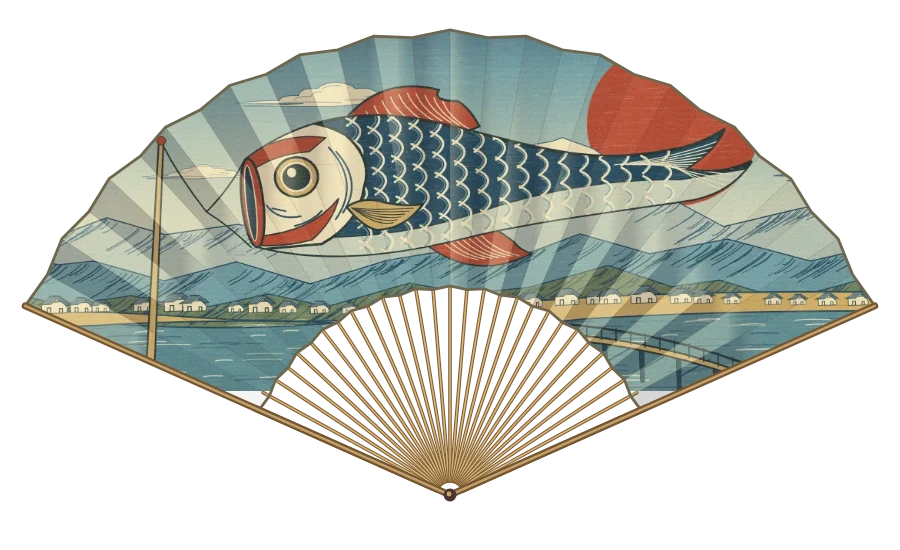
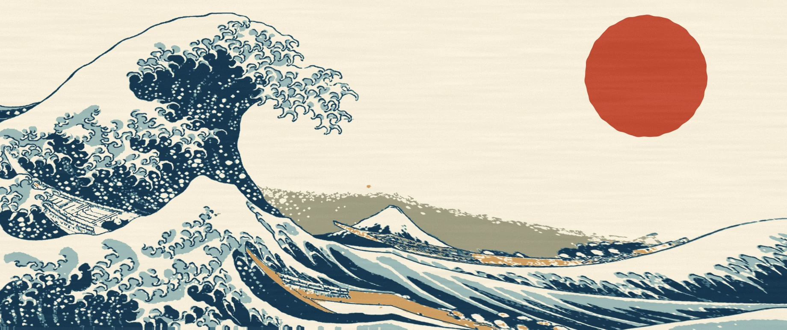

The Wind Has a Tail
From his bed, a boy can hear the river. His sister wants to show him the wind.
Screen film
A fish sewn from wind. A pear caught in cloth.
Watch the double billGoogle Gemini’s Lyria music tool generated one instrumental for each film. Play the original scores here, before the narration and field recordings were mixed in.
The Wind Has a Tail
The brief called for koto and a breath-led flute. In the film, river water, cotton pulling tight and a seam giving way share the room with the music.
Read the music prompt ↗The Fourth Corner
A five-beat walking pulse was the starting point. Footfalls and the sound of pears hitting the cloth were placed against the picture afterwards.
Read the music prompt ↗We opened Create music in Gemini, chose Standard length and Instrumental, and described each story’s timing, instruments and turning point. The orchard took a second request to return playable audio. We kept both original performances, lowered the music under speech and cut it to silence when the picture returned to bare paper.
One cloth carp, four impressions. Lay each block over the last to see where the marks meet.

Vermilion picks out the sun, the fins and the hoop at the mouth.
See how the plates are drawn ↗Watch the blocks fall into register, a needle pass through cotton and a sandal leave the ground.
Choose a subject whose shape changes in someone’s hands. Give the gesture room, hold its strongest silhouette, then let the scroll carry us into the next scene.
Open this repository in your coding agent and describe the story you want to make.
The opening seascape traces and re-inks the contours of Hokusai’s Under the Wave off Kanagawa (ca. 1830–32), from the Metropolitan Museum of Art’s public-domain impression JP1847. The sun and the two poster compositions were drawn for this screening. The brush lettering uses Yuji Mai.
The visual reference is Toward the Mountain by Lemomo (LemoLab). Its 44-second film is licensed under CC BY 4.0. The print engine adapts the project’s MIT-licensed code. The two new stories, scenes and characters were drawn in code. The English narrators use Kokoro.
CC0 field and contact recordings by Thimras, OwlishMedia and Iochi Glaucus.